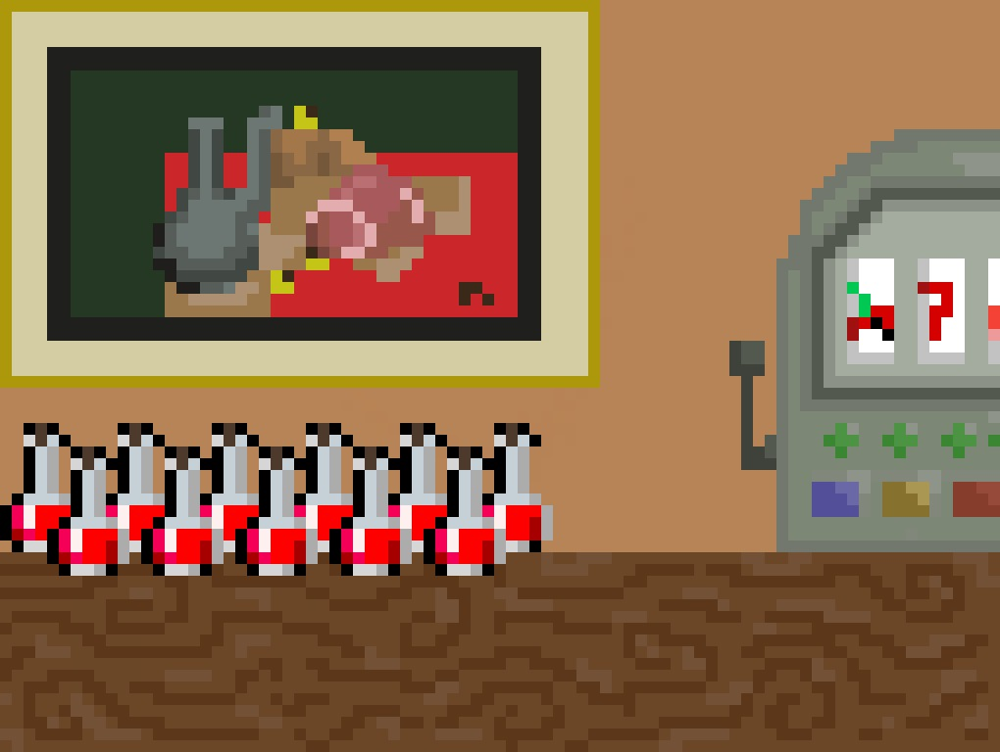
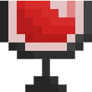
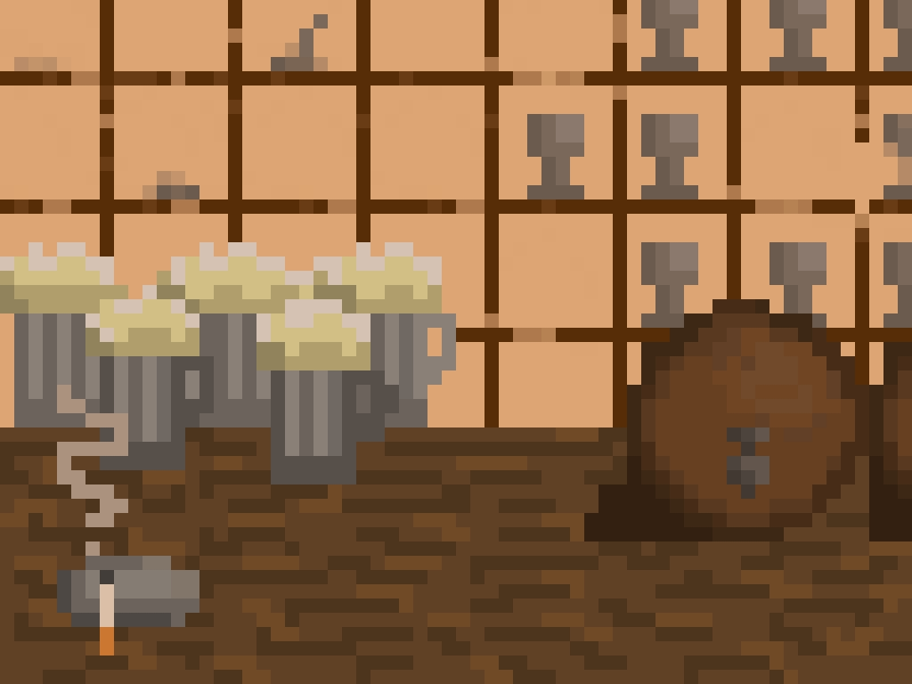
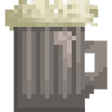
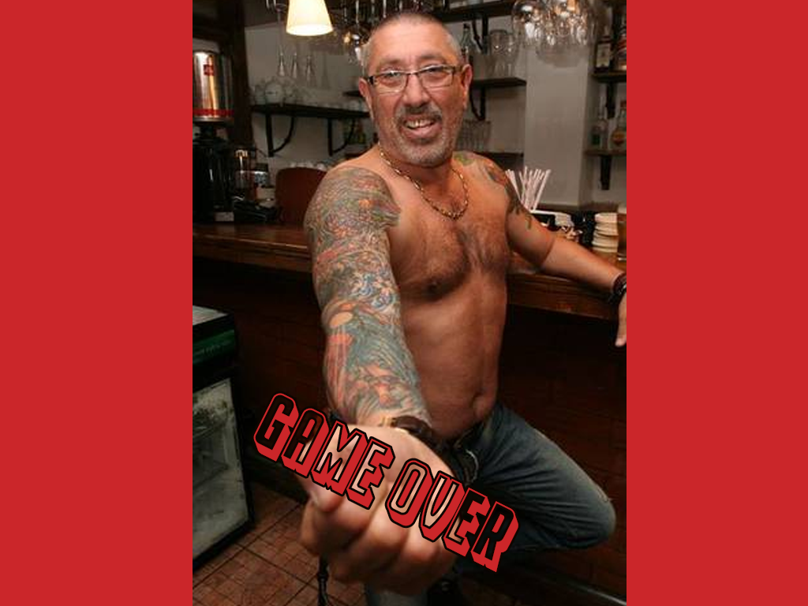

The first Carciuma of Mizil is a charming establishment located in the heart of the town. It is renowned for offering the finest selection of wines in the region, and is a popular destination for locals and tourists alike. The cozy interior features rustic decor and comfortable seating, creating a warm and welcoming atmosphere for guests to enjoy. The wine list is extensive, featuring both local and international varieties, and the knowledgeable staff is always on hand to offer recommendations and answer any questions. Whether you're a wine enthusiast or simply looking for a cozy place to relax with friends, the first Carciuma of Mizil is a must-visit destination.

The glass of wine

The second carciuma of Mizil is a popular spot for beer lovers. Known for its jugs of the best beer in town, this establishment is the go-to destination for those seeking a fun and lively atmosphere. The interior of the carciuma is decorated with a rustic and cozy charm that is sure to make you feel right at home. The staff is friendly and attentive, always ready to serve you a cold beer straight from the tap. Whether you're looking to catch up with friends or just unwind after a long day, the second carciuma of Mizil is the perfect place to do it.

The beer jug

The deathscreen

The soundtrack of the deathscreen